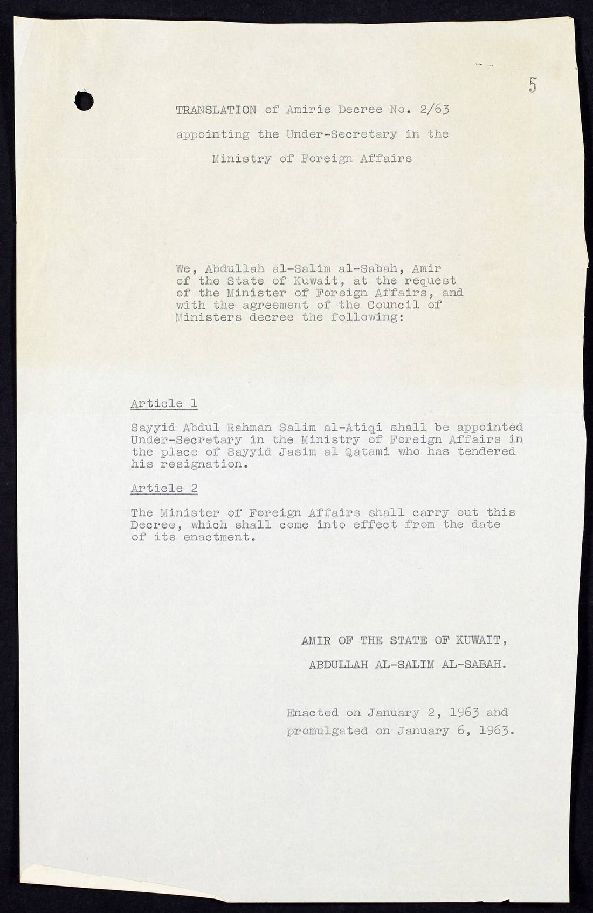
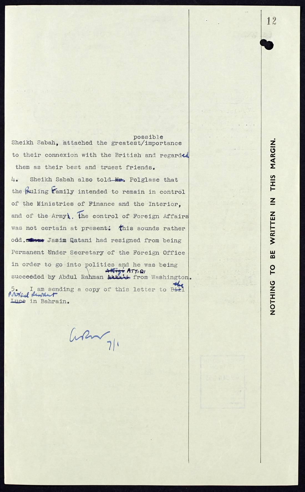

٢ يناير ١٩٦٣ · ترجمة بريطانية لمرسوم أميري وقّعه الشيخ عبدالله السالم الصباح
المرسوم الأميري ٢/٦٣: استقالة جاسم القطامي من وكالة وزارة الخارجية
ما هي
يعيّن الأمير عبدالرحمن سالم العتيقي وكيلا لوزارة الخارجية مكان جاسم القطامي الذي قدّم استقالته.
أهميتها
تؤكد أن جاسم شغل منصب وكيل وزارة الخارجية بعد الاستقلال، وتحدد تاريخ انتهاء المنصب، ويذكر ملف آخر السبب: استقال ليتفرغ للعمل السياسي قبيل انتخابات مجلس الأمة الأول.
من المقصود
هو جاسم القطامي نفسه الوارد اسمه الكامل في وثائق أخرى: مدير الشرطة الذي استقال وقت أزمة السويس، ثم النائب القومي في مجلس الأمة.
صور الصفحات




النص الأصلي
ملاحظات
صدر المرسوم بالعربية، وهذا النص العربي صياغة من الترجمة البريطانية وليس النص الأصلي للمرسوم. والصفحات الثلاث من الملف FO 371/168784 نسخ من المحضر نفسه، وقد كُتب الاسم «Qatani» في الأصل المطبوع.
أسماء أخرى
المصادر
الأرشيف الوطني البريطاني في لندن، رقمنه الأرشيف الرقمي للخليج العربي (agda.ae). الصور منشورة بإذن من الأرشيف الوطني البريطاني.
مرجع الأرشيف
- FO 371/168783 · Visit of foreign minister to UK
- FO 371/168784 · Visit of Heir Apparent to London: health
كيف كُتب هذا النص: نُسخ من قراءة الأرشيف لنص الصورة، وصُحح بالمقارنة مع الصورة حيث كانت القراءة مشوهة. وتشير … إلى نص محذوف. الترجمة العربية من Claude، يرجى مراجعتها.
افتح في الموقع التفاعلي